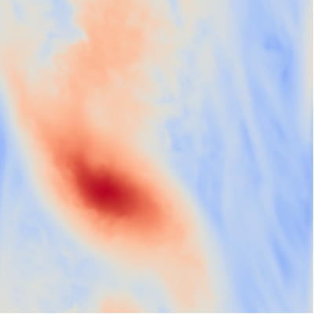
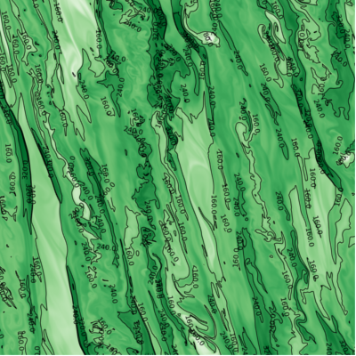

Research

  
|
Circumstellar Accretion DisksDisk evolution is a pivotal topic in astrophysics due to the necessity of something as simple as efficient angular momentum transport. If this transport mechanism can be described accurately, it would help explain disk lifetimes, planet formation and evolution, among other important topics. Early in the disk lifetime this would be dominated by gravitational instabilities, capable of generating strong mass accretion due to significant gas overdensities. Recent discoveries of self-gravitating circumstellar disks (Elias 2-27) and potentially even disk fragmentation (L1448 IRS3B) suggest that self-gravitating disks are an important stage of star and planet formation. Gravitational InstabilitiesSelf-gravitating gas overdensities often take the form of spiral arms in the disk, but under the right conditions lead to the quick formation of gas giant planets and brown dwarfs. My job is to model the ideal mass and cooling constraints that lead to planets. Once formed fragments may rapidly migrate, leading to growth, metal enrichment or destruction. To model this I use finite difference hydrodynamic simulation codes, like PENCIL, PLUTO and RAMSES, to model local and global effects relating to gravitational instabilities. Planet and Star FormationThe discovery of large gas giant planets with large orbital distances, such as those around HR 8799, suggests that some planets are not formed by core accretion. Gravitational instability has the potential to explain the existence of these planets while not competing with core accretion at shorter radii. Expected masses can easily reach into the brown dwarf or even low-mass star range and thus gravitational instabilities may also result in binary companions with separations on the order of 100 au. For more details, including a collection of images and movies, click here or on the "Research" header above to the left. |
{kind=link}
{kind=link}
About Me

|
I am originally from Salt Lake City, completing my bachelor education in math and physics at the University of Utah in 2012. I continued studying physics at the Ruprecht-Karls University in Heidelberg, earning a masters degree in spring 2015. From September 2015 to September 2019, I was a doctoral student in the theory of planet and star formation group at the MPIA in Heidelberg before moving to UNLV. For a more detailed history, see here for my CV. |
Links
Scientific links:My publications (ADS link) (on ADS Bumblebee)
The PENCIL code
PLUTO code, in conjuction with the Chombo libraries for adaptive mesh refinement.
The RAMSES code
Wengen4 test
Other things I like:
The cartoons of Pat Bagley, Matt Davies, Mike Lukovich, Wiley Miller, and Pat Oliphant
Football(soccer) tactics
Backcountry skiing
{kind=link}
Cycling
Futurama
falstad.com: Java applets that demonstrate basic math and physics concepts
Life out of balance?